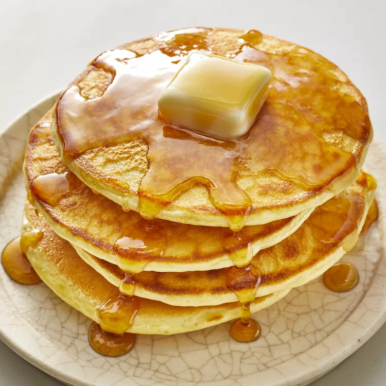

Home
Old-Fashioned Pancakes

Old-Fashioned Pancakes just like grandma used to make!
This recipe will bring you back to grandma's house for breakfast.
After taking one bite this will certainly become a family favorite.
Ingredients:
- 1 1/2 cups all-purpose flour
- 3 1/2 Tsp baking powder
- 1 Tbsp white sugar
- 1/4 Tsp salt
- 1 1/4 cups milk
- 3 Tbsp butter, melted
- 1 large egg